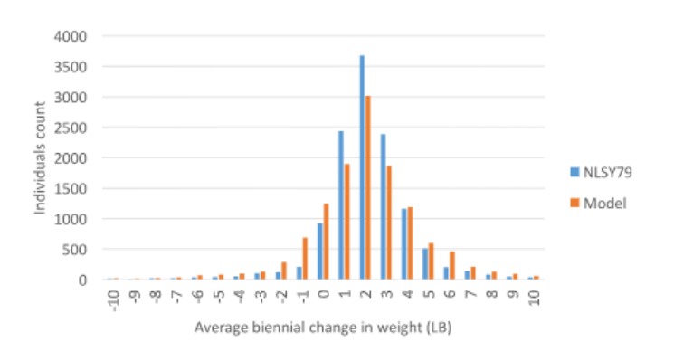
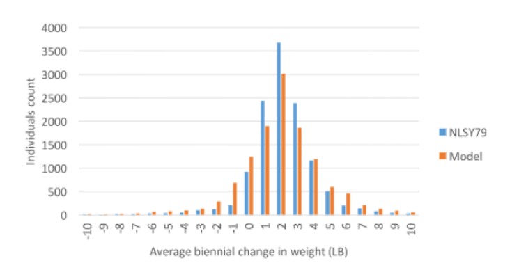

Network Norm Model
A computational model of changes in energy balance and obesity influenced by the modification of social networks brought about by unemployment
The Framingham heart study
The Framingham heart study followed 12,067 people repeatedly from 1971 to 2003. Analysis of the data set by Christakis and Fowler[1]]showed that a person’s chances of becoming obese increased by 57% (95% confidence interval [CI], 6 to 123) if he or she had a friend who became obese in a given interval.
Homophily and the theory of social influence
There are two sociological phenomena that can explain the effect of a friend's obesity on a person: homophily and the theory of social influence.
Homophily is where a person forms a link to another person who is like them.
Social influence is where a person becomes more like a person they are linked to.
The Christakis and Fowler study shows that homophily is a strong influence because a person’s chances of becoming obese are influenced by a friend who becomes obese. The relative strengths of homophily and social influence will be important factors in the parametrisation of the model
Social networks
Networks consist of nodes and edges. In the social network of the Framingham heart study described by Christakis and Fowler the nodes are the people in the study and the edges are the relationships between the people. These relationships are friends, family and coworkers. Networks are found throughout nature and society. Despite their apparent random appearance network theory can be applied to these networks to identify common patterns and behaviours. Using network theory, artificial networks of social interactions can be constructed that have the same important characteristics of real social networks. These artificial networks can then be used in models with the assurance that they will behave in the same way as real social networks found in society.
Modeling the influence of social networks and environment on energy balance and obesity
 

Giabbanelli et al[1] applied network theory to generate artificial social networks. They include a simple model of human metabolism and simulated how individuals influence each other with respect to food consumption and physical activity. They applied their model to both synthetic and real-world populations and demonstrated the importance of the structural properties of the collective social network of the individual on the macro-level distribution of body mass and obesity found in the population
AIM
Changes in social networks brought about by unemployment
Models
CoLab

We are using Agent Based Models (ABM) in our simulations. ABM are where persons (or agents) in a society are modeled as individuals within a computer program. The behaviour of the complete system emerges from the interaction of the agents with their environment and with each other.
We are writing the models in Google's Colab. Colaboratory, or “Colab” for short is a product from Google Research. Colab allows anybody to write and execute arbitrary python code through the browser. More technically, Colab is a hosted Jupyter notebook service that requires no setup to use, while providing free access to computing resources.This means that the model can be run by anyone with a Google account and a Chrome or Edge browser. Nothing needs to be installed on their computer.
We are demonstrating the general ABM methodology we will be using with the Body Mass Unemployment model by recreating a number of key sociological ABMs. We have done this to inform our discussions and hence our plans for our main model.We have started with the very early models 1) Schelling’s segregation model. 2) Axerod's model of the dissemination of culture.
IMPORTANT!
You have to have to be signed in to a google account. Colab does not work fully with Firefox browser use Chrome or Edge
Schelling’s segregation model
The economist Thomas Schelling wrote an agent based model to explore how simple rules that describe an agent's preference for housing can give rise to urban segregation. His model exhibited segregation even when individual agents didn't mind having neighbours of a different race or economic background.
The Colab model is Here
Axelrod's model of the dissemination of culture
The Axelrod model is a model of Social influence is where a person becomes more like a person they are linked to. It models the social convergence of culture. Unlike the Schelling model each agent is static in its own cell of a two dimensional matrix. Each agent can see four neighbours/contacts. North East South and West of the cell that it occupies.
The Colab model is Here